Agentic Mermaid / Gallery
Gallery
One layout engine, twelve diagram families. Every tile below is real renderer output — the same am render that ships in the package — not a hand-drawn screenshot.
Layout is deterministic: each of these renders byte-identically every run, so a diagram in your docs and the same diagram in CI agree to the pixel. Browse the families
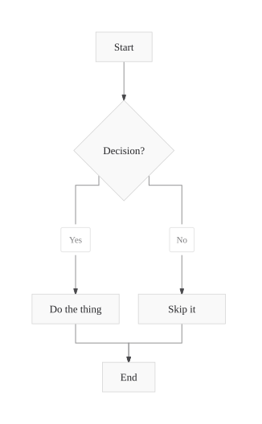
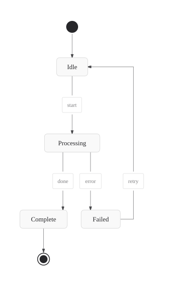
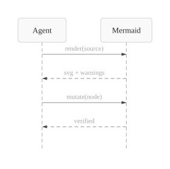
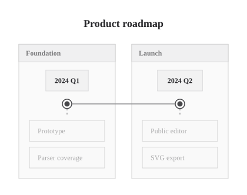
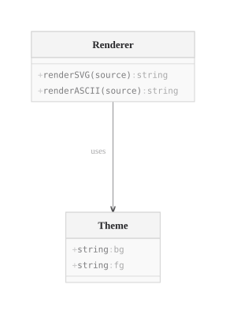
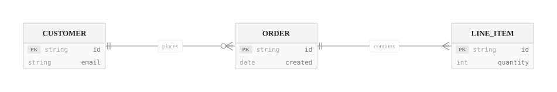
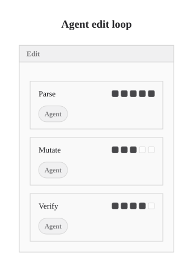
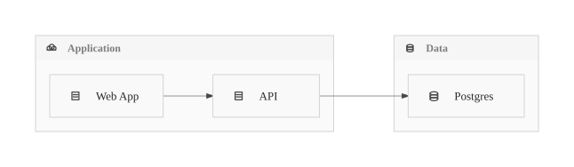
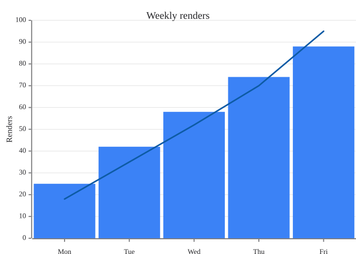
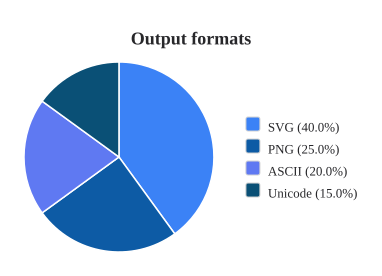
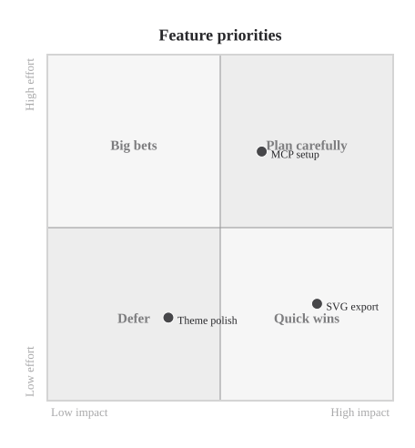
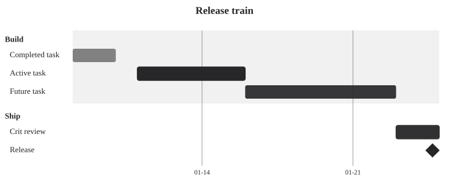
Every tile is generated from the family registry and that family's canonical example, so a new diagram family appears here automatically. Each also renders to PNG, ASCII, Unicode, and layout JSON from the one model.